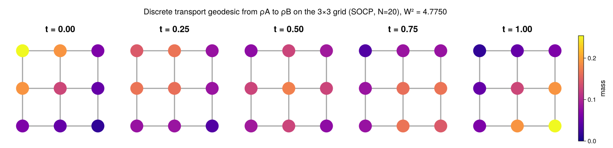
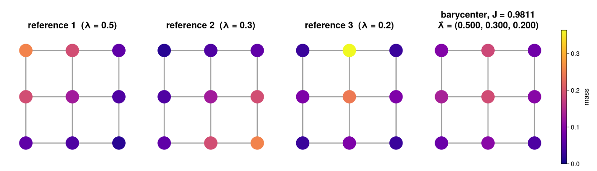

Tutorial
A walk through the package on a graph small enough to read every number: the 3×3 grid. Every block below is executed when the documentation is built, so the outputs are the current ones.
Graphs and densities
A MarkovGraph is a reversible Markov chain: a transition matrix Q and its stationary distribution π. Measures are represented as densities with respect to π, so a probability measure μ is stored as the vector ρ = μ ./ π, and it has unit mass when dot(ρ, π) == 1.
using GraphTransportation, LinearAlgebra
Q, π = grid_markov_chain(3) # 9 nodes, 12 edges
G = MarkovGraph(Q, π)
G.n, length(G.E)(9, 12)Two densities: mass concentrated near one corner and near the opposite one, kept strictly positive so that every method below applies.
normalize_π(v) = v ./ dot(v, π)
ρA = normalize_π([4.0, 2, 1, 2, 1, 0.5, 1, 0.5, 0.25])
ρB = normalize_π(reverse(ρA))
dot(ρA, π), dot(ρB, π)(1.0000000000000002, 1.0)Geodesics and distances
geodesic computes the discrete transport geodesic between two densities. The default method solves one second-order cone program on N time steps; W2 is the squared distance, ρ the density path (one column per time step), m the momentum path.
geo = geodesic(G, ρA, ρB; N=10)
round(geo.W2; digits=6), size(geo.ρ), size(geo.m)(4.775153, (9, 11), (12, 10))The path conserves mass at every time step:
maximum(abs, [dot(geo.ρ[:, k], π) for k in 1:size(geo.ρ, 2)] .- 1)2.220446049250313e-16Mass moves from one corner to the other along the grid, spreading through the middle on the way (masses ρ ∘ π at five times along the path; figure from src/experiments/TutorialFigures.jl):

The SOCP's time discretization error vanishes with N (the bound is O(1/N)). Hamiltonian shooting is exact in time (it integrates the geodesic ODE), so it serves as the reference here, and the SOCP values approach it from above:
W2_exact = geodesic(G, ρA, ρB; method=:shooting).W2
[(N, round(geodesic(G, ρA, ρB; N=N).W2 - W2_exact; sigdigits=3)) for N in (5, 10, 20, 40)]4-element Vector{Tuple{Int64, Float64}}:
(5, 0.000884)
(10, 0.000155)
(20, 3.38e-5)
(40, 1.27e-5)transport_cost returns just the squared distance. Its square root is a metric on densities; here is the triangle inequality through the uniform density:
ρU = ones(G.n)
d(x, y) = sqrt(transport_cost(G, x, y; method=:shooting))
d(ρA, ρB) ≤ d(ρA, ρU) + d(ρU, ρB)trueBarycenters and barycentric coordinates
The barycenter of reference densities refs with weights λ minimizes J(ν) = Σᵢ λᵢ W²(refᵢ, ν). With the default method it is one joint convex program, solved to its global optimum.
ρC = normalize_π([0.5, 4.0, 0.5, 1, 2, 1, 0.5, 1, 0.5])
refs = [ρA, ρB, ρC]
λ = [0.5, 0.3, 0.2]
ν, J, info = barycenter(G, refs, λ; N=10)
round(J; digits=6), round(dot(ν, π); digits=12)(0.981146, 1.0)analysis is the inverse problem: given a density and the references, recover the weights. It log-maps the target to each reference, forms the Gram matrix of those tangent vectors and solves a small quadratic program on the simplex. A barycenter is recovered to solver tolerance by the same method and resolution that synthesized it:
λ̂ = vec(analysis(G, ν, refs; N=10))
round.(λ̂; digits=6)3-element Vector{Float64}:
0.500003
0.300003
0.199993
For a density that is not a barycenter of the references, analysis still returns the weights of the closest tangent-space combination; the Gram matrix A is available with return_system=true.
λ̂U, A = analysis(G, ρU, refs; N=10, return_system=true)
round.(vec(λ̂U); digits=4) .+ 0.0, size(A)([0.5, 0.5, 0.0], (3, 3))Hamiltonian shooting: exp and log maps
For strictly positive densities the geodesic ODE can be integrated directly. log_map(G, ν, target) finds, by Newton shooting, the initial potential φ0 whose Hamiltonian flow from ν reaches target at time 1; exp_map integrates that flow. The two are inverse to each other, and W2 = 2H(ν, φ0) is the squared distance.
tangent = log_map(G, ρA, ρB)
ρ_end = exp_map(G, ρA, tangent.φ0)
round(norm(ρ_end - ρB); sigdigits=3), round(tangent.W2; digits=6)(7.66e-12, 4.774998)The same machinery gives a barycenter by Riemannian gradient descent, with no time discretization at all. It is first order, so it converges linearly, and the joint program above remains the certificate; on this grid the two agree to the SOCP's O(1/N):
ν_sh, J_sh, info_sh = barycenter(G, refs, λ; method=:shooting)
info_sh.iters, round(J_sh; digits=6), round(abs(J_sh - J) / J; sigdigits=2)(7, 0.981155, 9.2e-6)Choosing the mean
The transport metric depends on an admissible mean θ(s, t) (the mobility on an edge whose endpoint densities are s and t). It is part of the geometry, so it is set on the graph. The four built-in means are ordered pointwise, harmonic ≤ geometric ≤ logarithmic ≤ arithmetic, and a smaller mobility makes transport dearer, so the same pair of densities is farther apart under the harmonic mean than under the arithmetic one:
means = [("harmonic", HarmonicMean()), ("geometric", GeometricMean()),
("logarithmic", LogarithmicMean()), ("arithmetic", ArithmeticMean())]
[(name, round(transport_cost(MarkovGraph(G; mean=θ), ρA, ρB; method=:shooting); digits=5))
for (name, θ) in means]4-element Vector{Tuple{String, Float64}}:
("harmonic", 2.20629)
("geometric", 2.18518)
("logarithmic", 2.17815)
("arithmetic", 2.16442)Shooting takes every mean as is. The SOCP needs a conic representation, which the exact logarithmic mean does not have; QuadLogMean(8) is its Gauss–Legendre approximation, accurate to about 1e-10:
G_log = MarkovGraph(G; mean=QuadLogMean(8))
round(transport_cost(G_log, ρA, ρB; N=40); digits=5)2.17817Entropic transport for a ground cost
method=:sinkhorn computes a different object: entropic optimal transport for a ground cost matrix on the nodes (here squared shortest-path distance), following Bonneel, Peyré & Cuturi (2016). It is fast and differentiable, and its analysis recovers the weights of its own barycenters exactly, but its geometry is the ground cost and the regularization epsilon, not the discrete transport metric above.
C = ground_cost(G, :shortest_path)
ν_sk, _, _ = barycenter(G, refs, λ; method=:sinkhorn, cost=C, epsilon=0.05)
λ̂_sk = analysis(G, ν_sk, refs; method=:sinkhorn, cost=C, epsilon=0.05)
round.(λ̂_sk; digits=4)3-element Vector{Float64}:
0.5
0.3
0.2Which method when
| situation | use |
|---|---|
| any densities, including ones supported on part of the graph | method=:socp (default): global optimum, O(1/N) in time |
| strictly positive densities, speed, exact in time | method=:shooting |
| the exact logarithmic mean | method=:shooting |
| the paper's reference algorithm | method=:chambolle_pock (geometric mean only) |
| entropic transport for a ground cost | method=:sinkhorn with cost and epsilon |